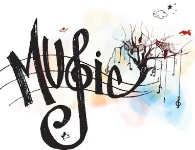

Les crooners - Au-delà des modes et du temps
La saga du swing et du charme – Avant-propos
Publié le : 04/03/2021
Ayant atteint la soixantaine, j'en ai connu des genres musicaux...

D
e la chanson "Réaliste" que j'entendais chez mes parents à la fin des années 50 (Edith Piaf, Lucienne Delyle ou Yves Montant) en passant par les années 60 où ceux-ci furent détrônés par la jeunesse avec l'émergence du "Rock'n'Roll" venu d'Amérique dont les chanteurs s'appelaient Elvis Presley, Bill Haley, Chuck Berry, Jerry Lee Lewis et Eddie Cochran.
Aussitôt copiés en France par de très jeunes interprètes du nom de Johnny Hallyday, Dick Rivers et d'autres (certains formant des groupes) tels que Les Chaussettes Noires, Les Fantômes ou Les Plays Boys, alors que l'Angleterre nous apportait Cliff Richard and The Shadows, et plus tard un groupe qui révolutionna la musique : The Beatles et dans un autre genre The Rolling Stones.
Mes goûts musicaux, eux, commencèrent à s'orienter au début des années 70 (adolescence oblige !) tout d'abord par du "Glam Rock" (Gary Glitter, Sweet ou Susy Quatro).
Cette courte période fut aussitôt suivie par la découverte de la musique afro-américaine ("Rhythm 'n' Blues", "Soul", "Jazz", "Funck" et enfin "Disco").
A
u milieu des années 70 et parallèlement à cette musique noire, j'appréciais beaucoup plusieurs chanteurs francophones : Sheila et Françoise Hardy pour les filles, Hervé Vilard, Alain Barrière, Adamo, Marc Aryan, Dave, le groupe Les Surfs, Henri Salvador (déjà un crooner !) ou encore le couple Stone et Charden.
Mais celui qui, à mes yeux, n'avait aucun rival et cela encore aujourd'hui plus de 40 ans après sa mort : Claude François et ses Clodettes (lui-même très influencé à l'époque par la musique Black.
C'est également durant cette dernière période que je découvris peu à peu le "Style Crooner" dont les interprètes étaient depuis longtemps têtes d'affiche : Bing Crosby, Dean Martin, Frank Sinatra ou encore Samy Davis Junior, aidés en cela par la radio, la télévision et le cinéma dont j'étais très friand.
D
epuis lors, ce style de musique, malgré les autres courants musicaux qui suivirent m'accompagne encore et toujours aujourd'hui... et je ne suis pas près de m'en lasser...
Les commentaires sont soumis à modération et doivent être approuvés avant publication.
Commentaires publiés
Marisarah
:
Bonjour j'aime beaucoup les crooners Posté le : 20/09/2023 à 13:50
mamyvel
Bonjour FredCloclo, j'ai bien envie de m'inscrire à ta newsletter, j'aime bcp les crooners, et le R&B.... je te vois souvent chez mes copines de blog, tu survoles beaucoup de blogs !
et tu as plusieurs blogs (oh, moi aussi) tu es retraité aussi?
merci de tes partages, je te souhaite un bon mardi, le dernier du mois d'août, amitiés, bises (perso je fais pas mal de creas photofiltre avec tutos) Posté le : 31/08/2021 à 15:56
*Allison*
:
Tout comme toi je suis restée attachée à tous les styles de musique que tu décris, c'est encore la meilleure pour moi et ça me rappelle le bon temps que j'ai vécu.
Merci pour tes visites
Bisous
Alisson Posté le : 13/06/2021 à 16:53
monia59 (plus adresse de bloc ?)
Coucou Fred je viens de voir que tu as plusieurs blogs
celui ci et très bien merci du partage ça nous change un peut
Monia Posté le : 22/05/2021 à 18:27
lylytop (plus adresse de bloc ?)
Je découvre que tu as plusieurs blog tous aussi intéressants les uns que les autres avec de différents sujets
bises amicales Posté le : 03/05/2021 à 08:36
manola (plus adresse de bloc ?)
superbe La tv vidéo Va bien , Bonne fin de journée , Bien reçu votre message A+ Manola Posté le : 12/03/2021 à 15:13
Monica-breiz
:
je n 'écoute pas souvent les crooners , mais de temps en temps , ce n 'est pas si mal
bien mieux que certaine musique et paroles des chansons actuelles ..
bonne soirée Fred
kénavo Posté le : 10/03/2021 à 18:23
Monica-breiz
:
je n 'écoute pas souvent les crooners , mais de temps en temps , ce n 'est pas si mal
bien mieux que certaine musique et paroles des chansons actuelles ..
bonne soirée Fred
kénavo Posté le : 10/03/2021 à 18:23
Pixelie25
:
Ton cheminement est intéressant et au vu des noms évoqués, je pense que nous sommes de la même génération à peu de chose près.
Ah ! Le fameux Rat Pack à la carrière toute aussi mouvementée que la vie sous les enseignes de Las Vegas.
Je sens que je vais me régaler ici ! Posté le : 09/03/2021 à 12:22
StellaC (plus d'adresse du bloc ?)
Bonsoir monsieur ,
Je viens de découvrir votre blog qui parle des crooners et je peux comprendre votre goût pour cette belle musique , je suis de celle qui aime encore écouter certains crooners comme Bing Crosby et bien d'autres ...
Je suis née d'une famille dont ma mère chantait et de mon papa qui jouait l'accordéon et autrement dit j'ai été élevée dans ou avec la musique et lorsque je vois la feuille de musique plus haut, j'ai hérité de celles de ma mère après son décès et ma mère était une fan de Tino Rossi , Lucienne Boyer,
il faudrait que je retourne voir dans cet héritage car je ne me souviens plus de toutes mais je conserve cela précieusement.
Merci de nous dire votre opinion à propos des crooners au moins ils chantaient des chansons et l'on pouvait entendre et comprendre les paroles qui n'étaient pas enterrées par les instruments trop forts .
Sur ce je vous souhaite une bonne semaine et je crois que je vais revenir vous visitez . J'aime beaucoup votre blog.
Mes amitiés
StellaC Posté le : 08/03/2021 à 21:58
fanouchacha (plus d'adresse du bloc ?)
Bonjour Fred,
je ne savais pas que tu avais un blog musical, je t'ai mis un com sur l'autre blog en te remerciant de ton gentil com. Je viens de m'inscrire à ta news letter. J'adore la musique. Bon lundi. Bisous. Posté le : 08/03/2021 à 10:47
nathie13or
:
sympathique ce blog aussi
si tu veux un cadre ou autre dis le moi ce sera avec plaisir Posté le : 07/03/2021 à 18:42
Alixia31 (plus d'adresse du bloc ?)
Bonjour Fred, et bien te voila bien lancé. Ravie pour toi. Bon dimanche ici un peu trop grisoulle Posté le : 07/03/2021 à 11:13
Monica-breiz
:
Bon vent à ce nouveau blog
je vais m 'inscrire à ta new- letter
bonne soirée
kénavo Posté le : 06/03/2021 à 17:18
Renée
:
Coucou, je ne m'abonne pas ayant déjà beaucoup de news dans ma boite mail chaque jour mais je viens de voir que tu l'as mis en lien sur l'autre alors je viendrais de tant à autres. j'aimais aussi ces airs qui sont indémodables. Bisous doux weekend Posté le : 06/03/2021 à 16:13
Marmotte 09 (plus d'adresse du bloc ?)
Sympa ton premier article ! Mais on ne peut pas te laisser de com " La saga du swing " . Dommage . Posté le : 06/03/2021 à 13:27
Marmotte 09 (plus d'adresse du bloc ?)
Coucou Fred ! Je sens que l'on va se régalé sur ce blog musical . Une bonne idée .
Bon samedi ! Posté le : 06/03/2021 à 12:14
Alixia31 (plus d'adresse du bloc ?)
Bonjour et bienvenu à ce nouveau blog musical.
je suis bien de ton avis ces chanteurs de ces années là moi non plus je ne suis pas prête de les oublier.
ce n'est pas pour tien qu'ils ont encore autant de succès même chez les jeunes .
je crois que l'on va en apprendre pas mal sur ton nouveau blog.
Bon week-end. je vais m'inscrire à ta N L pour ne rien rater. Posté le : 06/03/2021 à 11:36